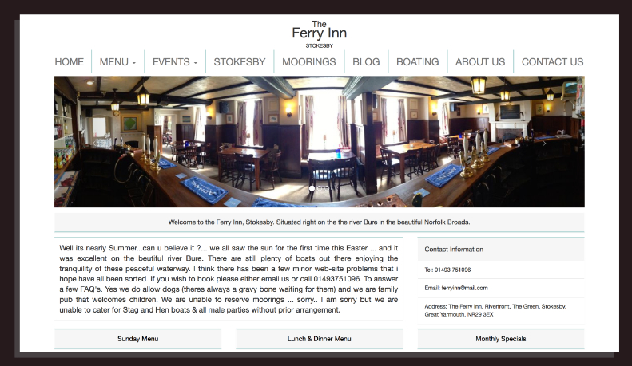

STUDENT AT BOURNEMOUTH UNIVERSITY, STUDYING DIGITAL MEDIA DESIGN
PROFESSIONAL
FRIENDLY
SUITABLE
Key Tehnical Skills
This is what I do best
Visual Discipline
Disciplined at time management and an eye for detail.
Web Design
My knowledge and skills within HTML & CSS have helped produce high quality websites
Mobile Apps
Recent university projects have introduced me to making apps with IOS Swift.
Graphic Design
One of my biggest passions is being creative within Adobe creative suites and Affinty Designer.
MY WORK
WORK EXPERIENCE
FERRY INN STOKESBY 2014 to date
Barman with periodic responsibility for supervision of front of house service. Gained experience of handling difficult customers in a fast moving environment.
WAITROSE SUPERMARKET 2011 – 2013
Responsible for delivery and presentation of stock on shop floor and customer payments. Given the responsibility of managing the ordering, stocking and presentation of my own aisle. Developed the ability to perform efficiently at busy periods such as pre-Christmas.
THE FARM GROUP 2011
Assisted sound editors on the mixing for popular TV shows. At a young age I learned to work in unfamiliar surroundings whilst meeting the expectations of a high-pressure business.
INTERESTS
I enjoy golf (8 handicap) and have represented my club at the National Finals of the inter club junior golf competition. My interests include all aspects of graphic design and improving websites for friends and local businesses. I enjoy cooking and I follow several sports including American football, basketball and soccer.
Leave me a message
07592837321
hallamager@msn.com
Hallam Ager
Hallam Ager
Hallam Ager
DESIGN ITERATIONS
About The Project
For this project we had to create an iOS mobile app which displayed geocached data. The app had to involve the location of Bournemouth beach, with this in mind I decided to create the app around the idea of the Juarssic Coast. The app is targetted at children with the aim of them having to disocvered these secret dinosaurs.To create the pages within the app I used Photoshop and InDesign.
Categories:
Mobile App
Graphic Design
Illustrator
IOS swift
DEVELOPMENT AND REALISATION
About The Project
For this project we had to create an infographic poster using vectors in Illustrator. The poster had to focus around a specific topic, for mine I choose worldwide obesity statistics. For the design I used the recognisable brand of Dunkin Donuts and used the donuts to show the stats.
Categories:
Infographic
Graphic Design
Illustrator
Flat Graphics
DESIGN FOR DIGITAL MEDIA ENVIRONMENTS
About The Project
In this unit we had to create a social media based website. The functionality of this website was more of a focus that the design. Users had to be able to add information to the website, create an account and be able to login, similar to the functionality seen on Facebook and Twitter. The website was targetted at students as the idea focused around users being able to post student deals and offers to the site. This was also the first time we had dealt with PHP.
Categories:
Website
HTML&CSS
PHP
TAG MAG
About The Project
Tag Mag was a magazine made by students of Sussex Downs College for student readership of 14-19 years. I designed three pages in the magazine which can be seen below. To design these pages I used Photoshop and InDesign. The rest of magazine can be accessed here: http://issuu.com/sdccomms/docs/__tag_2013_pages
Categories:
Magazine
Graphic Design
Illustrator
FERRY INN WEBSITE
About The Project
With my background in making websites my local pub asked me to create a website for them. In terms of the design I wanted a professioanl, easy to navigate and fully responsive website. The website isn't live just yet but a preview can be accessed here: http://hjager.com/ferryInn/public/

Categories:
Website
HTML&CSS
Typography
About The Project
For this project we had to link typography with a speech from a movie.
Categories:
Typography
After Effects
Branding
About The Project
For this project we had to redesign a website for a service that randomly picked someone out of a group to make a round of coffee. We had to think of the brand identity, art direction and the users experience of the site.